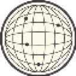
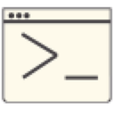
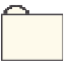

Pour commencer, choisissez votre session.
Ton adresse @aquerty.fr est fictive et sera générée automatiquement.


© 2026 JAJ Records
Ce fichier est verrouillé. Veuillez saisir le mot de passe :
Elements supprimes :
